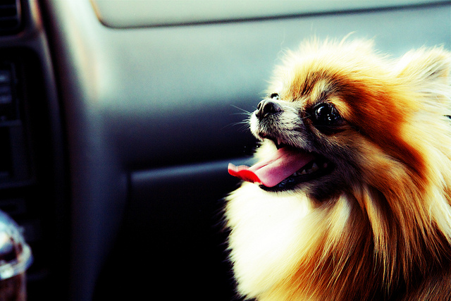
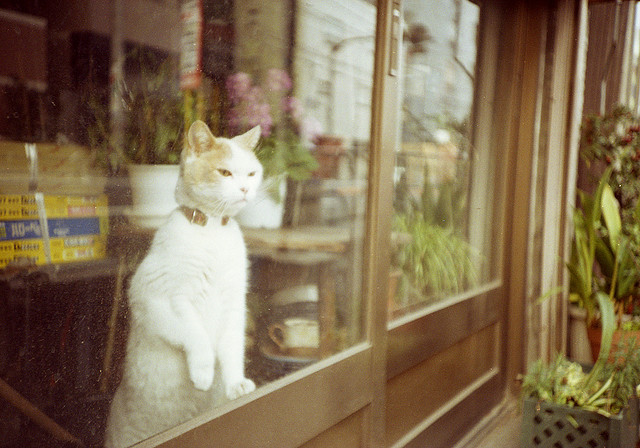
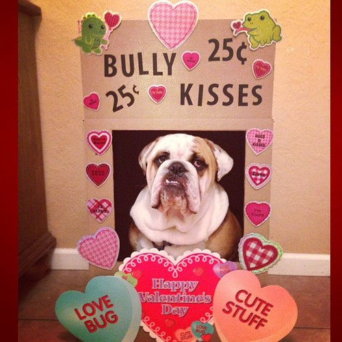
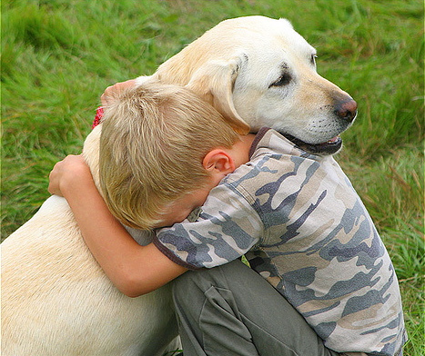

-

Meet Dakota, our feature dog!
-

Meet Mittens, our feature cat!
-

Here's a giraffe!!
Events
Roll over to our fun fair this May long weekend for balloons, bake sale and kissing booth. All proceeds go to support the animals fostered by ABCR.
Adopt
Animals for Adoption
Find your new best friend here.
Adoption Application
Please fill out an application if you are interested in adoption.

About ABCR
All Breed Canine Rescue (ABCR), a small group of volunteers who saw the great need to rescue dogs that other better-established mainstream groups will not help. Some of our rescues are shelter dogs, or dogs that need new homes because their owners are sick, have moved, or their life situation has changed. Based in St. Thomas, Ontario. We cover Elgin, Middlesex and Oxford counties. We also work with rescue network across North America. We are a small new group of volunteers, trying to do a big job, with big hearts, few foster homes, and limited resources.